“Great photography is about depth of feeling, not depth of field.”– Peter Adams
“With photography a new language has been created. Now for the first time it is possible to express reality by reality. We can look at an impression as long as we wish, we can delve into it and,so to speak, renew past experiences at will.”-Anonymous
“Once the amateur’s naive approach and humble willingness to learn fades away, the creative spirit of good photography dies with it. Every professional should remain always in his heart an amateur.”– Alfred Eisenstaedt
“It’s weird that photographers spend years or even a whole lifetime, trying to capture moments that added together, don’t even amount to a couple of hours.”– James Lalropui Keivom
“Most things in life are moments of pleasure and a lifetime of embarrassment; photography is a moment of embarrassment and a lifetime of pleasure.”– Tony Benn
“When I say I want to photograph someone, what it really means is that I’d like to know them. Anyone I know I photograph.” – Annie Leibovitz
“To me, photography is an art of observation. It’s about finding something interesting in an ordinary place… I’ve found it has little to do with the things you see and everything to do with the way you see them.” – Elliott Erwitt


 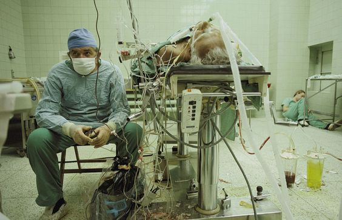
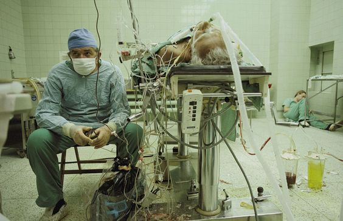


 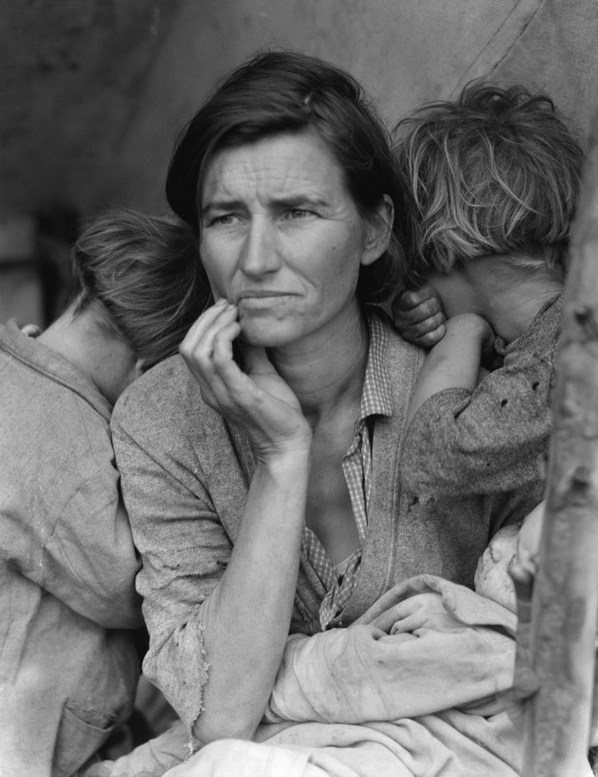
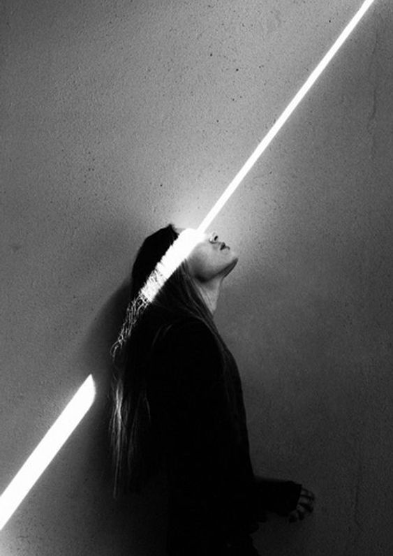
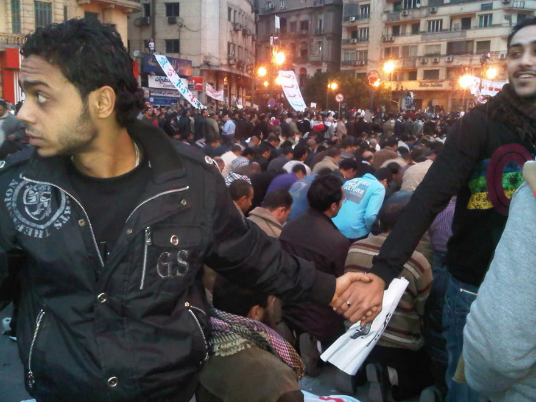
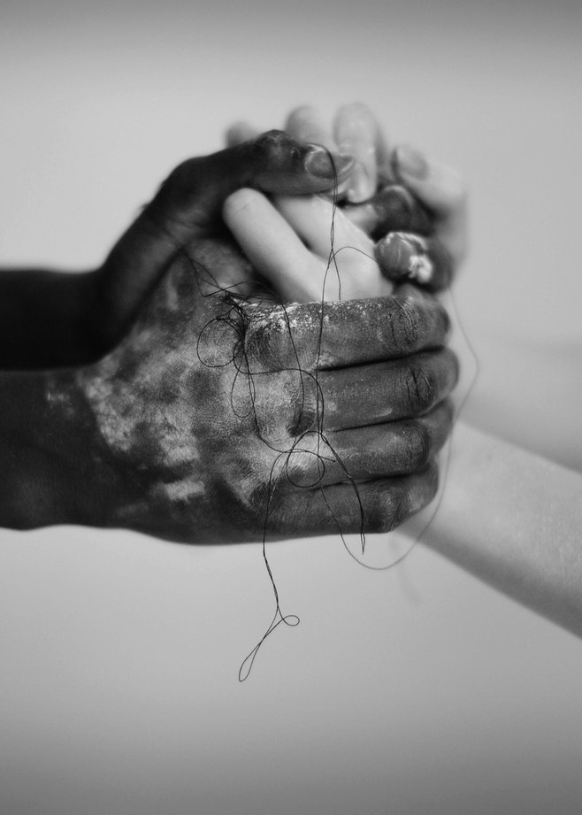
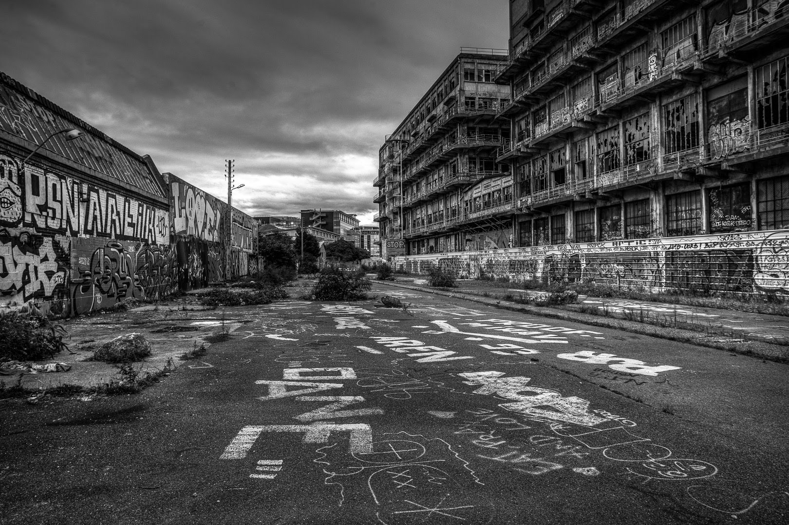
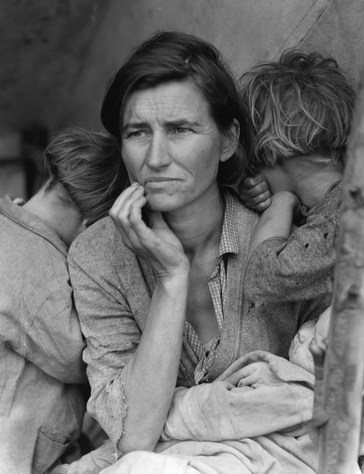
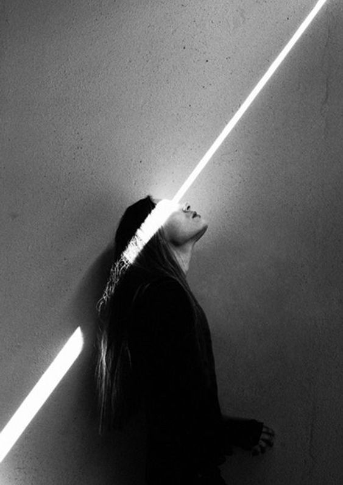
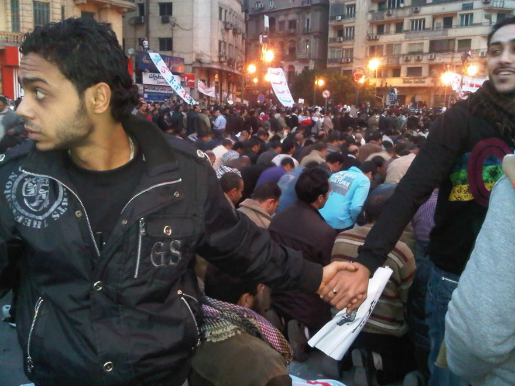
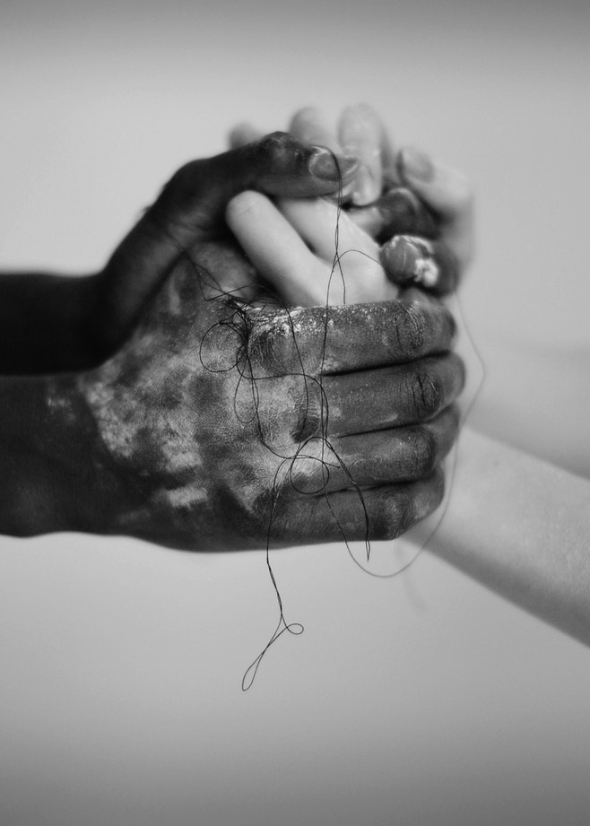
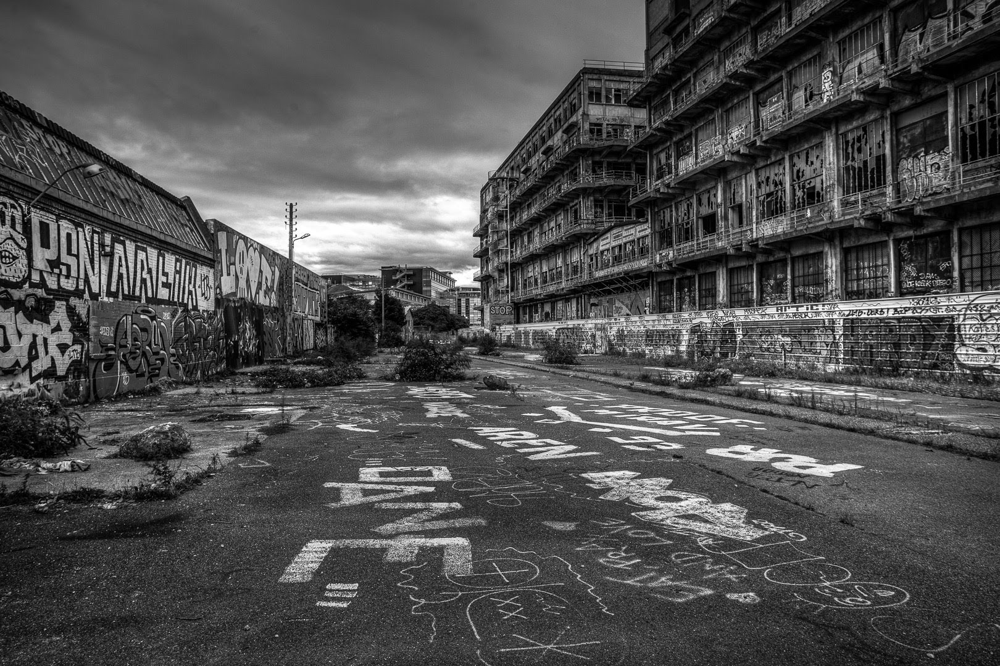